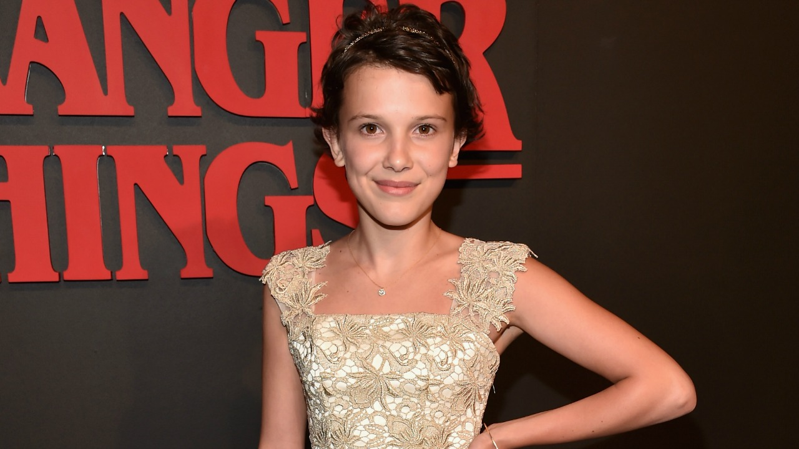
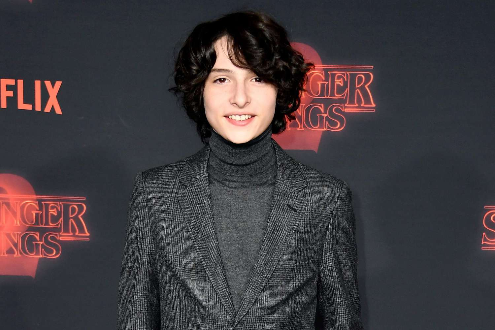
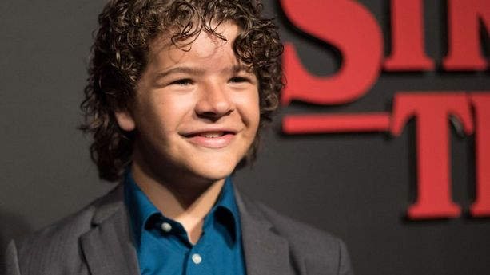
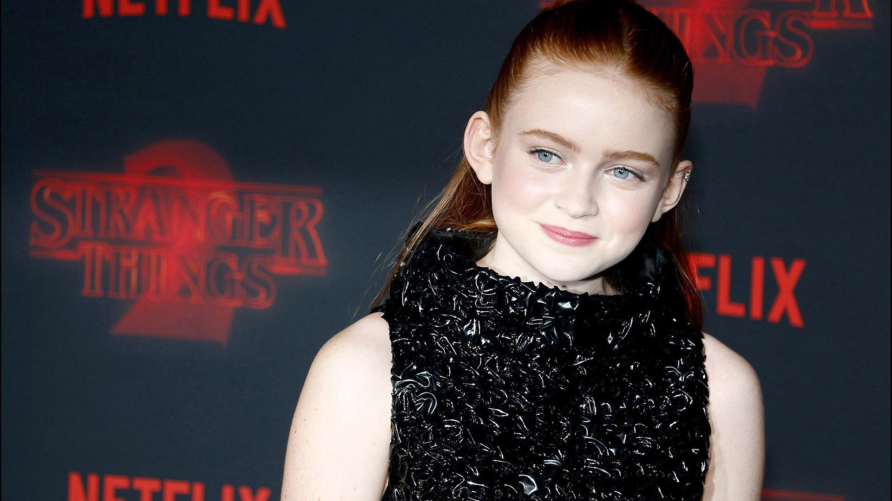

Millie Bobby Brown como Eleven
Una niña con habilidades psíquicas que escapa de un laboratorio secreto.
Finn Wolfhard como Mike Wheeler
Amigo cercano de Eleven y líder del grupo de amigos.
Gaten Matarazzo como Dustin Henderson
Un joven con gran carisma, inteligencia y sentido del humor; es el corazón del grupo y sirve de “pegamento” entre sus amigos. Siempre con curiosidad científica, extravagantes descubrimientos y bromas aliviantes en momentos de tensión.
Sadie Sink como Maxine "Max" Mayfield
Es la nueva integrante del grupo, tras múltiples audiciones y sesiones de química con sus compañeros.
